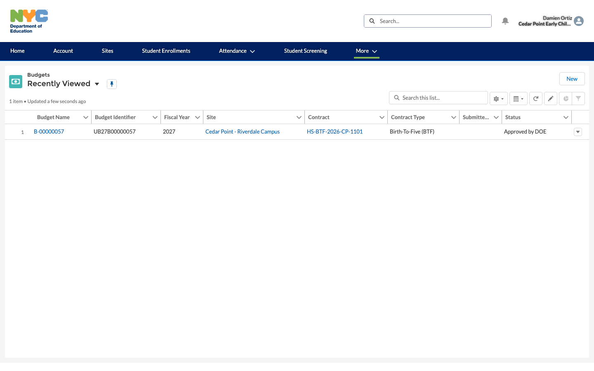
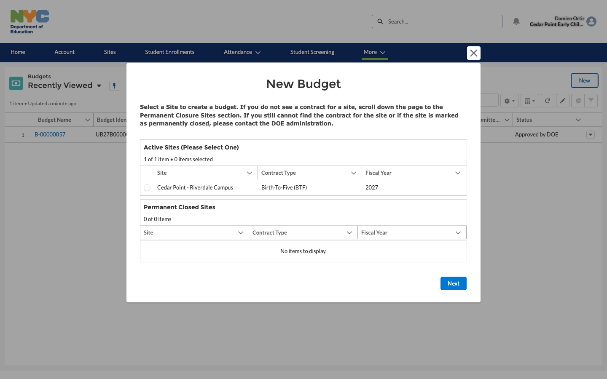
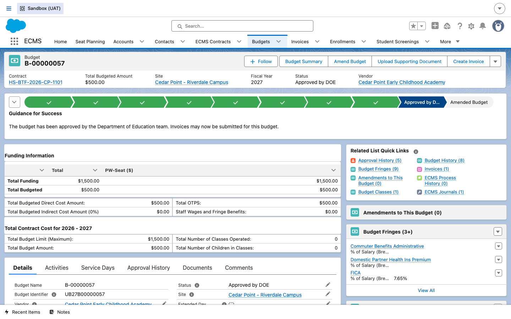
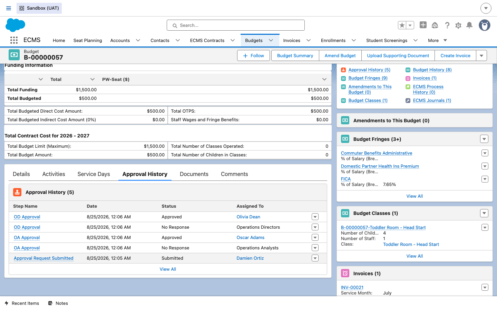
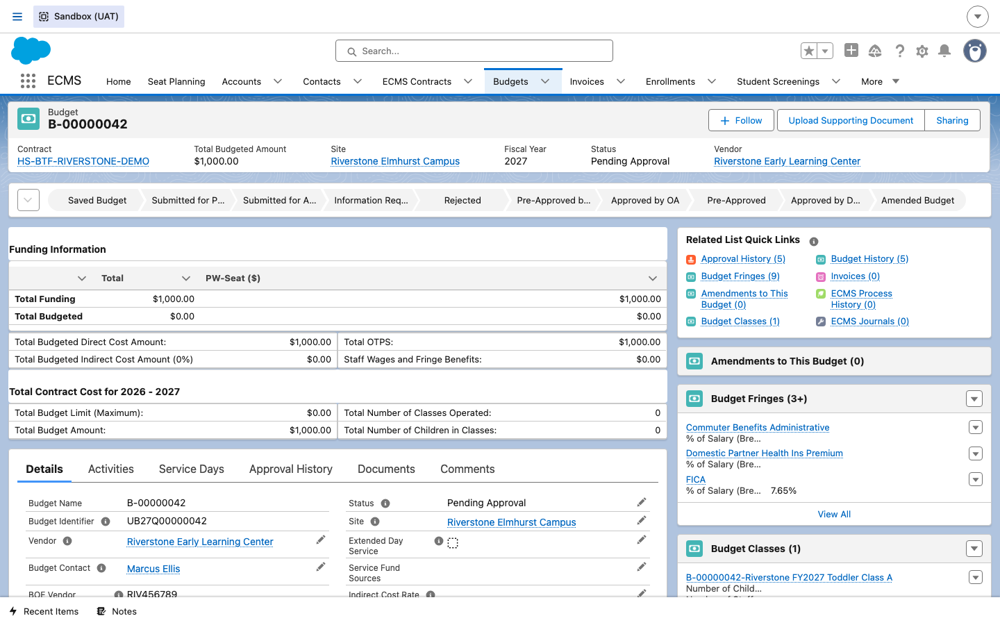
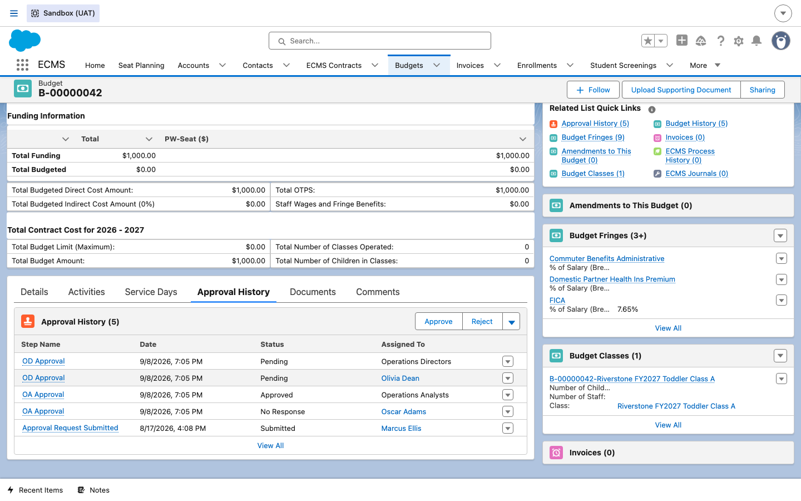

Budget Creation & OA → OD Approval
How a CBO's Budget Creator builds a site's yearly spending plan in the vendor portal and submits it, and how that budget then moves through DOE's two-stage internal review — an Operations Analyst (OA) first, then an Operations Director (OD) for final sign-off, with an optional Central/Portfolio check for larger or more sensitive budgets — before it's usable for invoicing.
Overview
Each site has a budget for the fiscal year — a spending plan showing what the
CBO/FCCN expects to spend on staff, supplies, rent, and other costs for that site and contract. A
Budget Creator at the CBO builds this in the vendor portal and submits it; internally
it's stored as an ECMS_Budget__c record, tied back to the site's Contract and
Contract Period. From there, the budget goes through DOE approval: an
Operations Analyst (OA) reviews it first, then it moves to an Operations
Director (OD) for final sign-off — this is the "two-stage" or "OA → OD" approval chain
— and for some larger or more sensitive budgets there's an additional Central/Portfolio
level check on top of that.
Steps
1Open the vendor portal home page
DO Log in to the vendor portal as the CBO's Budget Creator. This example continues with Damien Ortiz, site contact for Cedar Point Early Childhood Academy, who was provisioned with Budget Management access back in the Vendor & Site Setup guide.
RESULT The portal home page loads with quick-action tiles for the functions this user was provisioned with, including Create Budget.

2Go to the Budgets list
DO Click the Create Budget tile from the portal home page.
RESULT The Budgets list view opens, scoped to this vendor, showing any existing budgets — here, Cedar Point's own B-00000057, already Approved by DOE from a prior fiscal year — plus a New button to start another one.

3Start a new budget and pick the site
DO Click New. In the "New Budget" dialog, select the site to create a budget for from the Active Sites list — each row already shows the site's contract type and fiscal year, pulled from the underlying contract and contract period — then click Next.
RESULT A wizard opens listing every active site this vendor has a contract for. Sites with a permanent closure are broken out separately and can't be budgeted for, which is why the dialog calls out contacting DOE administration if an expected site or contract is missing.

4Fill in the budget's spending plan
DO Continue through the wizard, entering the site's planned spending — staff wages and fringe benefits, OTPS (other-than-personal-service costs like supplies and rent), and any budget classes/line items for the classrooms this budget covers. Total Budgeted Amount is calculated from these figures against the site's Total Funding for the fiscal year.
RESULT As figures are entered, the wizard totals them against the contract's funding ceiling for that fiscal year (Total Budget Limit) so the Budget Creator can see whether the plan is within the funded amount before submitting.
5Submit the budget for DOE approval
DO Once the spending plan is complete, the Budget Creator clicks Submit (or saves as a draft first and submits later). Submitting locks the budget as an "Approval Request Submitted" event and routes it to the DOE Operations Analyst queue.
RESULT The budget's Status changes from "Saved Budget" to "Pending Approval", and its Approval History logs a "Submitted" step with the submitter's name and timestamp — this is the same event visible later in Steps 6–8.
6Operations Analyst (OA) review
DO Internally, an Operations Analyst opens the submitted budget and reviews the spending plan against the contract's funding, then approves, rejects, or requests more information (Status can move to "Information Requested" if something's missing).
RESULT Once approved, the OA step is recorded on the budget's Approval History tab. For Cedar Point's B-00000057, that step shows Oscar Adams as the OA who approved it, followed immediately by the OD step.


7Check progress mid-review
DO Since Cedar Point's own budget is already fully approved, use a different budget still in progress to see what a mid-review record looks like: B-00000042 (Riverstone Early Learning Center) is currently sitting between OA and OD review.
RESULT This budget's Status reads "Pending Approval", and its progress bar shows "Approved by OA" reached but "Approved by D…" (DOE/OD) not yet complete — the OA step is done, and the record is now waiting on the Operations Director.

8Operations Director (OD) final sign-off
DO On that same in-progress budget, open the Approval History tab to see the chain so far, including the pending OD step waiting to be actioned by an Operations Director (with Approve/Reject buttons available to whoever is assigned).
RESULT The history shows OA Approval already Approved by Oscar Adams, and two OD Approval rows — one still routed to the "Operations Directors" queue, one directly assigned to Olivia Dean and showing Pending. Once an OD approves, Status advances to "Approved by DOE" (as seen on Cedar Point's B-00000057 in Step 6), and the budget becomes usable for invoicing.

9Central/Portfolio check (larger budgets only)
DO For larger or more sensitive budgets, a further Central/Portfolio-level reviewer checks the budget in addition to the standard OA → OD chain, before it's considered fully approved.
RESULT This additional check adds another review step beyond OD sign-off for the budgets it applies to; it isn't triggered for every budget, so a routine, modestly-sized site budget like the two examples above typically completes at the OD stage.
10Confirm the approved budget
DO Once every required stage has approved, revisit the budget's detail page to confirm its final state before telling the vendor they can begin invoicing.
RESULT Status reads "Approved by DOE," the approval-stage progress bar is complete, and a Create Invoice action button is now available directly on the record — Cedar Point's B-00000057 shows exactly this state, with Total Budgeted Amount $500.00 against $1,500.00 of Total Funding, and one invoice (INV-00021) already created against it.